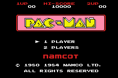

Famicom Mini 06 - Pac-Man (Japan) (En)
EEPROM 64K Save Format Spec gbakit Built-In 💾 MultiBoot 🎮 4P Link 📡 Wireless
Cartridge Identity
- Game Code
FPMJ(FamilyFPM)- Header Title
PAC-MAN- Maker / Revision
01/ rev0- ROM Size
- 1.0 MiB (1,048,576 B)
- Save Media
EEPROM 64K- SHA-256
526150cadcb7a5a9137981f2eca7f3999b69e307f16fc9585c6dc6a9fcf5b7ea
Screenshots


Niche & Rare Accessories
Detected niche/rare GBA accessory support: 🔌 Wireless Adapter (RFU_V1021).
Full 343-ROM corpus breakdown in the Cartridge Hardware & Niche Accessories Reference · auto-detected from ROM bytes via
gbakit inspect.
- Wireless Adapter (RFU_V1021)
- Nintendo Wireless Adapter (
AGB-015) SDKRFU_V1021+RFU-MBOOT
Link Cable & Multiplayer Communications
This title contains detected communication capabilities: 💾 MultiBoot 🎮 4P Link 📡 Wireless.
Detailed protocol specifications, SIO registers, Joybus commands, and MultiBoot sequences are documented in the Link & Multiplayer Reference.
- Multi-Player SIO (4P)
- 16-bit ring network · SIOCNT (
0x04000128) literals:0x005348,0x0056b4,0x005804· SIODATA32/SIOMULTI0 (0x04000120) literals:0x000e18,0x00565c,0x00592c - Nintendo Wireless Adapter
- AGB-015 RFU driver signature
RFU-MBOOTat offset0x009eb4 - Nintendo Wireless Adapter
- AGB-015 RFU driver signature
RFU-MBOOTat offset0x014c20 - Nintendo Wireless Adapter
- AGB-015 RFU driver signature
RFU-MBOOTat offset0x01cc7c - Nintendo Wireless Adapter
- AGB-015 RFU driver signature
NINTENDOSio32IDat offset0x009ec0 - Nintendo Wireless Adapter
- AGB-015 RFU driver signature
NINTENDOSio32IDat offset0x01cc88 - Single-Cart MultiBoot
- Single-Cartridge MultiBoot (Download Play) client/server handler · Thumb SWI 0x25 (
0xDF25):0x0009ee· SDK signatures:MBOOTat0x009eb8
Battery Save Format Specification
Open Full Save Format SpecDownload save-format.json
- Specification Coverage
- 3 mapped fields · 0 verified checksum(s) · Confidence: HIGH
- gbakit Built-In Support
- Built-in (FPMJ)
gbakit save verify FPMJ save.sav
gbakit save decode FPMJ save.sav
gbakit save fix FPMJ damaged.sav -o repaired.savObserved Battery Save Layout
- Fill Byte & Active Size
0x00fill · 512–512 / 8,192 B active (entropy 0.00 bits/B)- Active Offset Ranges
0x0–0x1FF(1 total)- ASCII Magic / Headers
- None detected
- Observed Variable Regions
- 0 bytes across 0 spans: None
- Candidate Checksum/Counter Spans
- None
Asset Map (formatkit.asset-map.v1)
Download FPMJ-r0-526150cadcb7a5a9.asset-map.json.gz (2,481 B (2.4 KiB)) Verified PASS · 86.13% coverage
| Metric | Bytes / Value | Entries |
|---|---|---|
| Identified | 1,664 B (1.6 KiB) (0.16%) | 17 |
| Mapped | 0 B (0.00%) | 0 |
| Opaque | 901,524 B (880.4 KiB) (85.98%) | 1 |
| Unknown | 145,388 B (142.0 KiB) (13.87%) | 17 |
| Total ROM Size | 1,048,576 B (1.00 MiB) | 35 |
| Coverage % | 86.13% | — |
| Entries w/ Code Refs | 17 / 35 (48.57%) | — |
Top Identified Formats: gfx.gba-palette (16 · 1,472 B (1.4 KiB)) · gba.rom-header (1 · 192 B)
Largest unknown Extents (Headerless / Custom Asset Candidates)
| Offset | Size | Shannon Entropy | Code Refs |
|---|---|---|---|
0x00010040 | 81,452 B (79.5 KiB) | 7.141 bits/B | 0 |
0x00009ED4 | 24,908 B (24.3 KiB) | 7.152 bits/B | 0 |
0x00004D94 | 20,724 B (20.2 KiB) | 6.323 bits/B | 0 |
0x00001078 | 6,296 B (6.1 KiB) | 6.059 bits/B | 0 |
0x00002E4C | 2,760 B (2.7 KiB) | 4.942 bits/B | 0 |
gzip -dk FPMJ-r0-526150cadcb7a5a9.asset-map.json.gz && gbakit map verify rom.gba FPMJ-r0-526150cadcb7a5a9.asset-map.json
gbakit assets export rom.gba --asset-map FPMJ-r0-526150cadcb7a5a9.asset-map.json -o out/Text, Fonts & Scene Data
- Primary Text Encoding
- Compressed / custom-encoded text
- Font & VWF Indicators
- No VWF Table No 1bpp Font · BIOS SWIs: BitUnPack
0x10:4· LZ770x11/12:10· Huffman0x13:0· RLE0x14/15:2 - Scene & Packaging
0ROM pointer tables (≥32 entries,0≥200) ·0relativeu32TOCs ·11OAM metasprite hits